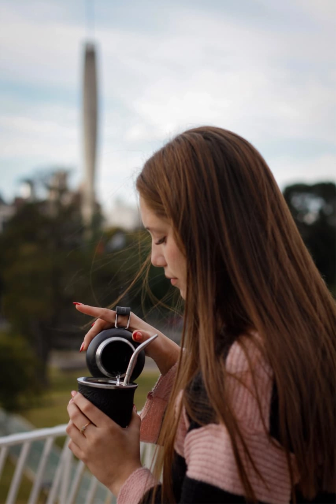
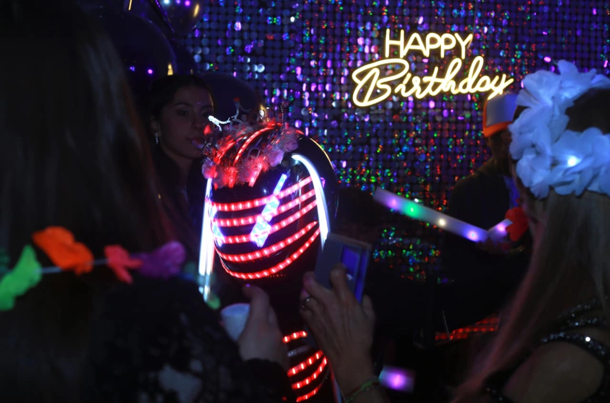
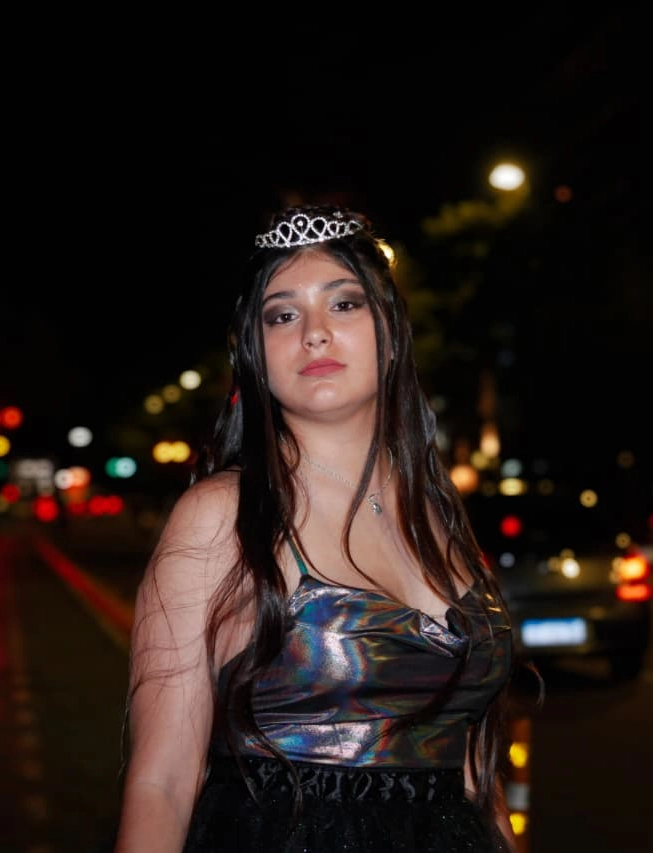
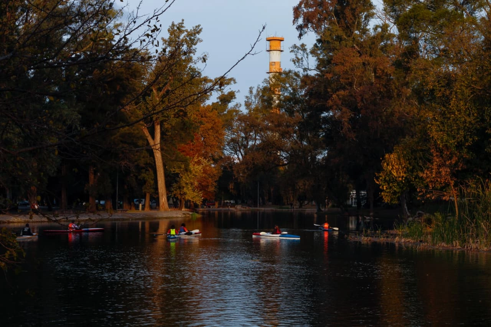
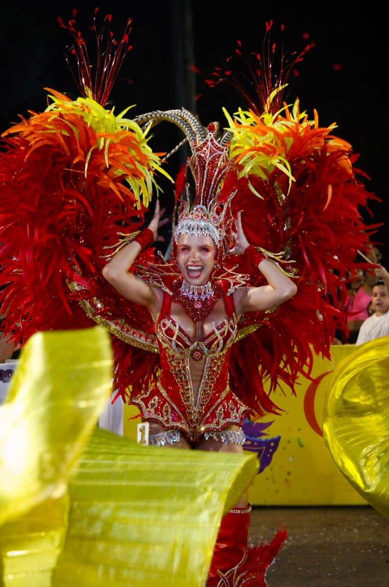
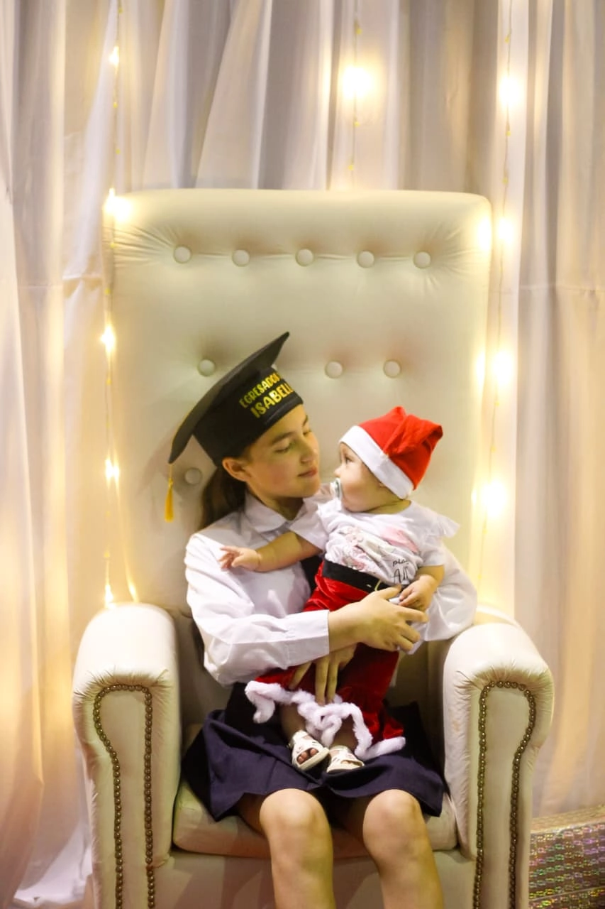
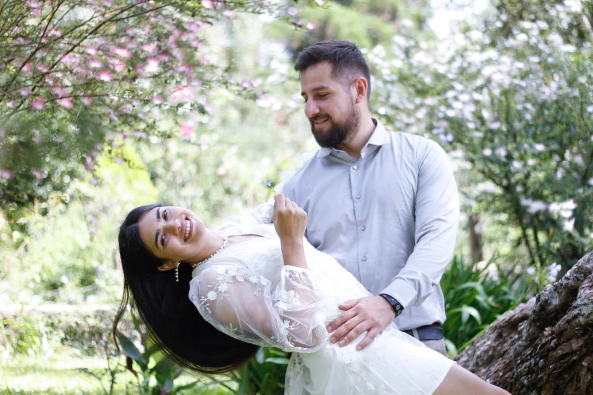
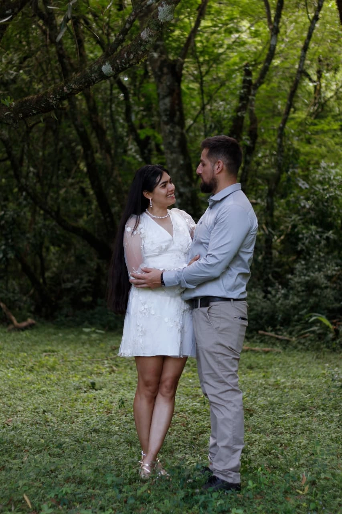

Trabajos recientes
Una selección de coberturas en bodas, fiestas, eventos corporativos, books y sesiones personales. Distintos tipos de proyecto, un mismo criterio de trabajo.







Fotografía y video para todo tipo de proyectos
Cobertura de eventos, contenido para marcas y emprendimientos, y sesiones personalizadas. Cada trabajo se arma según lo que necesites.
Cobertura de eventos
Bodas, cumpleaños, fiestas y eventos corporativos. Presencia discreta durante toda la jornada, sin interrumpir el desarrollo del evento.
Fotografía profesional
Imágenes editadas con acabado cinematográfico y color grading cuidado. Entrega en alta resolución, listas para imprimir o publicar.
Video cinematográfico
Aftermovie, highlights y video resumen. Trabajo el ritmo, la música y el montaje para armar una pieza que resuma bien lo que pasó.
Edición de reels
Videos verticales optimizados para Instagram y TikTok. Trabajo el formato, los subtítulos y el ritmo para que el contenido de tu marca funcione en redes.
Books y sesiones personalizadas
Sesión personalizada en la locación a convenir. Books temáticos para emprendimientos, marcas o proyectos personales. Entrega de galería digital con las fotos editadas en alta calidad.
Una pieza, en movimiento
Un vistazo al trabajo en video. Ritmo, color y montaje puestos al servicio de cada proyecto.
Hablemos
Reservá tu fecha
Contame sobre tu evento, tu marca o tu emprendimiento y armamos una propuesta a medida. Escribime por Instagram y te respondo personalmente.
Escribime por Instagram